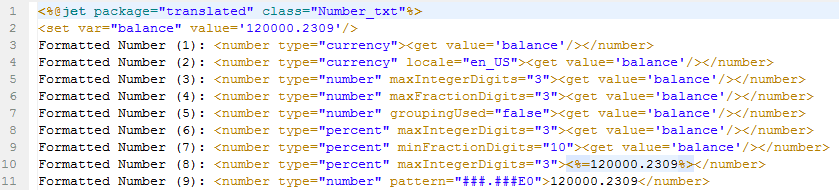
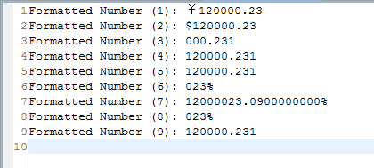

<number>
格式化数字
根据标签内填写的数字符串，输出格式化的数字，或者设置格式化的数字变量。
var（可选） 存储格式化数字的变量 注：如果设置了var属性，不会输出结果
setScope（可选） 设置变量的作用域 属性 ontext:设置变量到context中（默认） session:设置变量到session中
pattern（可选） 格式化的样式 符号 描述 0 代表一位数字\nE\t使用指数格式 # 代表一位数字，若没有则显示0 . 小数点 , 数字分组分隔符 ; 分隔格式 - 使用默认负数前缀 % 百分数 ? 千分数 ¤ 货币符号，使用实际的货币符号代替 X 指定可以作为前缀或后缀的字符 ' 在前缀或后缀中引用特殊字符
type（可选） 类型 属性 number:数值（默认） currency:货币 percent:百分数
groupingUsed（可选） 是否对数字分组 属性 true:是 false:否（默认）
currencyCode（可选） ISO 4217 货币码，默认为当前区域货的货币码，当type="currency"时可用 如： 人民币是 CNY 美元是 USD
currencySymbol（可选） 货币符号，默认为当前区域的货币符号，当type="currency"时可用 如： 人民币是 ￥ 美元是 $
locale（可选） 国家，默认为当前所在国 如： 中国是 zh_CN 美国是 en_US
integerOnly（可选） 是否只解析整型数 属性 true:是，整数型 false:否，浮点数（默认）
maxIntegerDigits（可选） 整型数最大的位数
minIntegerDigits（可选） 整型数最小的位数
maxFractionDigits（可选） 小数点后最大的位数
minFractionDigits（可选） 小数点后最小的位数

